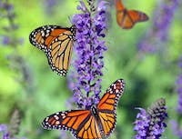
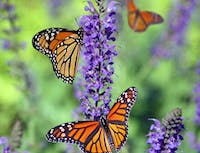
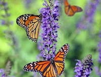

Green Sturgmar Zoo has the finest herd of Business Analysters that exist in the world. They shine so brightly and have all aspects of the business firmly in their grasp at all times. Nothing gets past these critters.
Species on Exhibit Today
 



Green Sturgmar Zoo has the finest herd of Business Analysters that exist in the world. They shine so brightly and have all aspects of the business firmly in their grasp at all times. Nothing gets past these critters.
